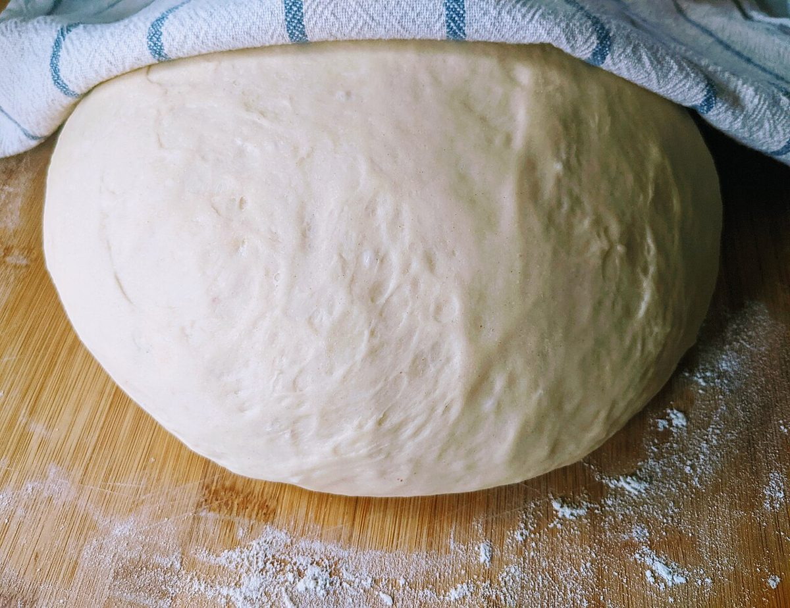
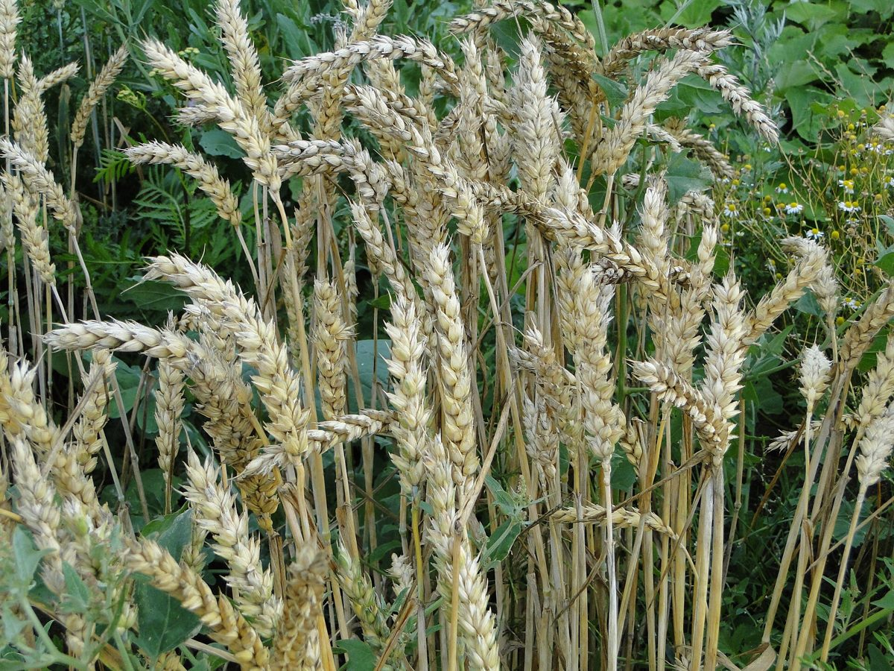
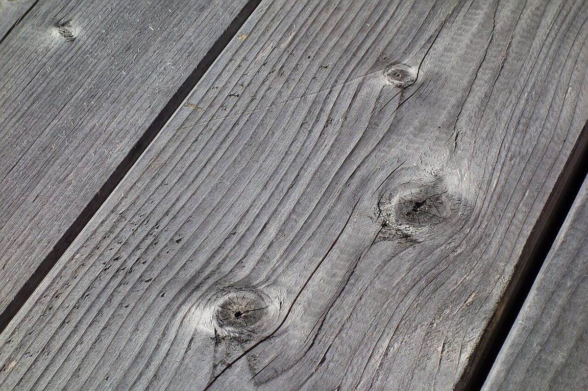

B 凡例
凡例
案内図の読み方を、このお店の情報に当てはめました。確認できているのは、所在地とInstagramのアカウントだけです。
- ●確認できていること
店名は「ココノカ」、業種はベーカリー。所在地は長野県上田市塩川600-10(〒386-0401)。電話番号はなし、連絡はInstagramから。
- ○準備中
営業時間・定休日・メニュー・価格・ご予約・駐車場は準備中です。確認でき次第、掲載します。
- ▲制作側の想像
下の「想像してみる」は制作側が考えたもので、お店の実際の様子・考え・商品とは関係がありません。
▲ 想像してみる
ココから、パンのはじまりまで
制作側は「ベーカリー」という業種から、パンができるまでの順番を想像しました。粉があって、生地がふくらんで、麦の穂へとさかのぼる。ここに並べた写真は、その連想を絵にしたフリー素材で、お店の実際の工程や商品ではありません。


